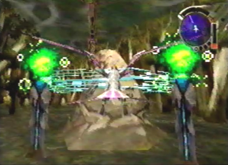

Diary Entry 27: Forest of Zoah The Forest's Scream Before leaving the Seekers' Stronghold, Zadoc told me that it wouldn't be so easy to reach Grig Orig from the forest. The Arangata were tightening their defenses and would surely stand in my way. The creatures were rooting themselves in the forest. In order to destroy them I would first have to attack their roots, to weaken them. As the dragon and I flew above the forest, we could see the infested Grig Orig in the distance. I had to fight my way north. I would avenge Zoah! Both Ancient Age machines and Arangata, surrounded the forest canopy. As we encountered one of the Arangata, we were immediately blown back by a strong winded tornado. I had no choice but to take Zadoc's advice, and find the roots of these terribly strong monsters. We entered a nearby cocoon. It lead below the Forest of Zoah. The once lush forest was now turning to ash! Everything was ablaze. We had to stop Grig Orig at all costs, or the forest would be completely burned to the ground. While exploring the bottom of the forest, we eventually stumbled upon what looked like an Arangata root. It was surrounded by a force field that feed the monster energy. The dragon quickly deactivated it and the root soon shriveled up. As we searched for the remaining roots, we found a northern ruin with a mysteriously locked door. The dragon wasn't strong enough to open it, so we left it alone, intending to come back at a later time. Throughout the forest, we found a total of eight roots. Each one, we deactivated with no trouble. Once all of the roots were taken care of, we reentered one of the large cocoons surrounding us, and returned to the forest canopy. Above the forest, we then fought a series of battles against all eight Arangata. They were now defenseless and open to attack. We soon destroyed each and every one of them. After the sequence of battles we pressed on towards the infested Grig Orig. It was worse than I thought. The ship was completely infested with monsters and looked horrible. The dragon and I had no choice but to put an end to its chaotic rain over the forest. After the battle, we left the forest and returned to the Seekers' Stronghold. The aftermath of Grig Orig, was sure to be a tremendous loss for the seekers. |
|
| Divine
Overview |
1. When you first arrive, you'll see the infested Grig Orig in the distance. It's time to finally put it to rest. |
2. As you fly towards Grig Orig, you will be engaged in a sequence of battles against either Lazara or Protodrones. You will eventually fight one out of the eight Arangata, surrounding the forest. You can't defeat the Arangata yet, as it will just blow you away with a strong winded tornado. You first have to go below the forest and destroy all eight roots. |
|
3. Enter the closest Naga Cocoon you can find. |
4. You will now be inside the Forest of Zoah. |
|
 5. As you explore the forest, seek out and deactivate all eight Arangata roots. Their locations can be found on the map. |
|
6. Directly north of the winding forest paths, you will eventually come to a strange ruin with a locked door. You need a laser rank of level 6 to enter. Don't worry, we'll come back here later. |
7. Once all eight roots are deactivated, save your game and enter the Naga Cocoon closest to the save device. |
|
8. Without the energy they once received from the force fields around their roots, the Arangata are now defenseless and open to attack. You will now have to destroy all eight Arangata in a sequence of battles, involving both Lazara and Protodrones. Head towards any of the surrounding drones or Arangata, to initiate a battle sequence. |
|
9. Once all eight Arangata are destroyed, make your way towards the infested Grig Orig and engage it in battle. Put an end to its horrible rampage! |
|
10. After the battle, your dragon will upgrade to the Arm Wing model. Your dragon is now laser rank level 5! |
11. Head back to the Seekers' Stronghold to witness the after math of Grig Orig's chaotic rampage. |